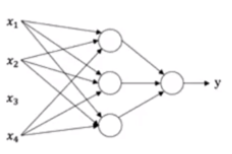
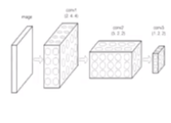
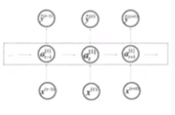
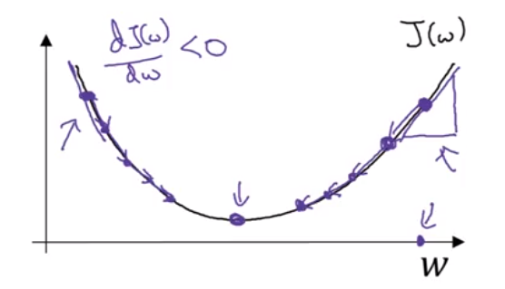
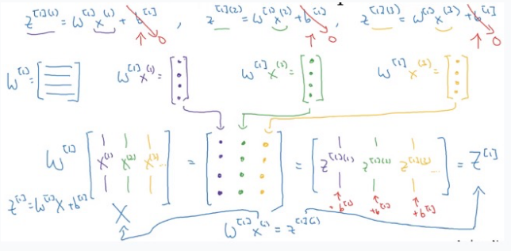

神经网络
常见神经网络类型
标准神经网络 Standard NN
卷积神经网络 Convolutional NN
循环神经网络 Recurrent NN

2. 前向传播算法
数据集 $X, Y$：$(x, y)$ 表示单个样本，$x \in \mathbb R$，$y \in \{0, 1\}$，$m$表示训练集数量，训练集记为 $\{(x^{(1)}, y^{(1)}), (x^{(2)}, y^{(2)}), …, (x^{(m)}, y^{(m)})\}$，训练集有$m_{train}$，测试集有$m_{test}$，整个训练集用矩阵的形式表示：
其中 $X.shape = (n_x, m)$， $Y.shape = (1, m)$
2.1 逻辑回归NN
给定 $x$，$x \in \mathbb R^{n_x}$，想要计算出 $\hat y = P(y=1|x)$，$0\le \hat y \le 1$
对第 $i$ 个样本：
激活函数 sigmoid $\sigma(z) = \frac{1}{1+e^{-z}}$ 的作用是将计算结果转换到 $(0, 1)$ 之间，如果 $z$ 很大，$\sigma(z) \approx \frac{1}{1+0} = 1$；如果 $z$ 很小，$\sigma(z) \approx \frac{1}{1+\infty} \approx 0$
分加偏置量bias的作用，类似于原来是“正比例函数”，总是经过原点，现在加一个偏置，变成了普通的”一次函数“，不再一定经过原点，可以让表达式更一般化，增强表达能力。
计算时，可将偏置项合并进向量：
其中$x\in \mathbb R ^{n_x+1},x_0 = 1$，$\theta_0$ 对应于 $b$，$\theta_1 … \theta_{n_x}$ 对应于 $w$
2.2 损失函数
给定训练集 $\{(x^{(1)}, y^{(1)}), (x^{(2)}, y^{(2)}), …, (x^{(m)}, y^{(m)})\}$，我们希望 $\hat y^{(i)} \approx y^{(i)}$，所以单个样本的损失函数定义为：
该损失函数是凸函数，好优化，容易找到最优解，如果 $y=1$, $L(\hat y, y) = -log\hat y$，当希望$\hat y$ 越大越好，当$\hat y = 1 = y 时损失函数为0$；
如果 $y=0$, $L(\hat y, y) = -log(1-\hat y)$，当希望$\hat y$ 越小越好，当$\hat y = 0 = y 时损失函数为0$；
对于整个数据集，参数的损失函数为所有样本损失函数的平均：
3. 反向传播算法
3.1 梯度下降

3.1.1 单个样本梯度下降
对于逻辑回归：
求导：
更新参数：
3.1.1 m个样本梯度下降
一般地，对于m个样本，$J=0, d_{w_1}=0, d_{w_2}=0, d_b=0$，从 $1$ 到 $m$ 个样本：
然后求当前下降梯度的平均：
用计算得到的下降梯度更新参数：
3.2 向量化
更快，否则需要用for循环。
GPU(Graphics Processing Unit)
GPU和CPU都用并行化指令，称为SIMD (single instruction multiple data单指令多数据流)instructions. 意味着如果用内置的函数如 $np.$，在实际实现的时候并不需要for训练，可以利用并行化更快地计算。
不管怎样，避免用for循环：
1 | for i in range(n): |
3.2.1 逻辑回归向量化实现：
一般地，对于m个样本，$J=0, d_{w}=np.zeros((n_x, 1)), d_b=0$，从 $1$ 到 $m$ 个样本：
然后求当前下降梯度的平均：
用计算得到的下降梯度更新参数：
3.3 Broadcasting
- (m, n) + (1, n) —> (m, n)
- 代码少
- 速度快
对整个训练集，$w, b$ broadcasting 为 m 项：
$X=[x^{(1)}, x^{(2)}, …, x^{(m)}]$
$Z=[z^{(1)}, z^{(2)}, …, z^{(m)}] = W^T X + b$ Z = np.dot(wT, X) + b
$A=[a^{(1)}, a^{(2)}, …, a^{(m)}] = \sigma(Z)$
Broadcasting 实现反向传播
每一次迭代中：对于m个样本，$J=0, d_{w}=np.zeros((n_x, 1)), d_b=0$：
用计算得到的下降梯度更新参数：
4. 多层神经网络：
$Z^{[1]}=W^{[1]}X + b^{[1]}$
$A^{[1]}=\sigma(Z^{[1]})$
$Z^{[2]}=W^{[1]}A^{[1]} + b^{[2]}$
$A^{[2]}=\sigma(Z^{[2]})$
